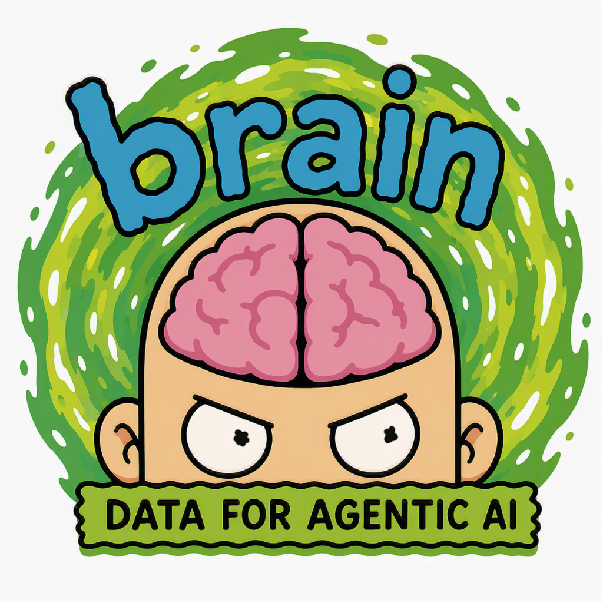

A knowledge graph that lives in your repo —
typed, searchable, and hard to corrupt.
Pile enough notes, docs, and facts into a folder and eventually you want to ask questions of them — "which on-call engineer supports the payments service?" — not just grep for keywords. brain stores a typed knowledge graph as plain Markdown on disk, validates every write against a schema, and lets you search, traverse, and reason over it from the CLI or over MCP.
A vector store hands back fuzzy text with no structure. A raw LLM agent let loose on your files invents duplicates and schema-invalid junk. A hosted knowledge base drags your data into someone else's cloud. You end up with either no structure or no trust.
brain gives you both. Structure comes from an entity-component-system ontology; trust comes from the fact that every write — CLI or MCP — is validated against that schema, so the graph can't drift into inconsistency. Queries run against an embedded pglite index rebuilt from the Markdown files, giving you hybrid vector + keyword search, deterministic graph traversal, and grounded LLM synthesis.
Brain Facts
Why memory, not history #
Foundations · the problem brain solves
Many "agent memory" systems really mean one of two simpler things: a longer transcript stuffed into the prompt, or retrieval over old messages. Neither is enough. Conversation history is expensive, noisy, and transient — it holds raw events, not durable abstractions.
The thesis. Long-term memory is not a bigger context window. It is a separate subsystem with its own write, read, and maintenance logic. brain is that subsystem — infrastructure, not a chatbot feature.
A durable memory layer must do more than "store facts somewhere." It needs at least five capabilities:
① Persist
Survive across sessions and workflows — here, as git-tracked files.
② Compress
Turn raw conversation into stable, typed abstractions.
③ Retrieve
Surface the right memory at the right time.
④ Mutate
Update and merge when new evidence arrives — no junk drawer.
⑤ Ground
Shape future answers and tool calls in what was remembered.
Without them…
No mutation → a junk drawer. No grounding → an unused archive. No compression → just another transcript.
Why naive memory drifts and bloats
Append-everything systems fail in three predictable ways. brain is designed against each:
| Failure mode | What goes wrong | brain's answer |
|---|---|---|
| Append-only bloat | Every candidate fact is stored forever. | Canonical ids + refiners merge duplicates into one record. |
| Contradiction drift | Stale facts stay live after they're disproven. | Writes are upserts through a validated accessor — the current best value wins. |
| Low-signal recall | Retrieval returns technically-related but useless fragments. | Typed graph hits resolve exact relational facts before vector backfill. |
The memory lifecycle #
Write → maintain → retrieve → use
The cleanest way to think about engineered memory is as a lifecycle. Every part of brain maps onto one stage of it:
| Stage | Question | In brain |
|---|---|---|
| Write | What is worth keeping? | set / new / ingest extract typed entities |
| Maintain | Does this update or merge something older? | refine resolves, renames, de-dupes, follows chains |
| Retrieve | Which memories matter for this turn? | search / graph / graphql / ontology |
| Use | How should they shape the answer? | think and the MCP tools ground the model |
This lifecycle is the spine of the docs. The sections below walk it in order — first how memory is written and structured, then how it is maintained, then the five ways it is retrieved, and finally how it is used by an agent over MCP.
Facts → graph → ontology #
Why a typed graph, and not just embeddings
Memory gets more capable in layers. Each layer is real; each has a ceiling that motivates the next.
- Flat facts ("Jane prefers dark mode") are the first serious layer — great for preferences and identity, but they lose structure once the domain becomes relational.
- Vector search retrieves by meaning, not spelling: a query for "pet food" finds a note that says "small animal snacks." Essential, but it can't answer structural questions.
- A knowledge graph makes relationships first-class:
Person(jdoe) —[OWNS]→ System(alpha)can be traversed, validated, and extended directly. - An ontology gives that graph a formal, inspectable vocabulary — declaring which entity types, attributes, and relations are legal, then validating every write. "Only a
PersoncanOWNaSystem."
Does the graph pay for itself? On an adversarial benchmark seeded with stale facts and paraphrased "semantic poison," a full typed-graph brain hit ~49% precision@5 vs ~11% for vector-RAG — a +31-point jump from the graph layer alone, while returning 53% less total payload. Typed graph hits resolve exact relational and chronological facts before similarity ever runs — a task pure vectors structurally cannot do: knowing which fact is still current.
brain is all four layers in one cwd-local tool: plain Markdown files (like a local-first wiki), a pglite vector index, a typed relation graph, and an ontology schema that every write is checked against.
Quick start #
Install, initialize, and you have a brain
1 Install
Built for Bun with CoffeeScript. Link it from local disk:
bun install
bun link # register the global `brain` commandThe agl-ai dependency supplies embeddings + chat via GitHub Copilot (default), LM-Studio, or Ollama — no separate model server required.
2 Initialize a database
Run brain init in any directory to scaffold a new store:
brain initbrain.yaml # per-db config (models, reranker, storage dirs)
db/
<Class>/<id>.md # entity instances — the A-box (git-tracked)
schema.yaml # classes, attributes, relations — the T-box (git-tracked)
pgdata/ # pglite index — rebuildable, gitignoredThe files are the source of truth. The pglite index is a cache: mutations write the .md first, then reindex. You can always rebuild — and git diff — the whole graph from disk. Every commit is a fully-revisioned snapshot backup.
3 Ask for help anytime
brain # the grouped command list
brain help graph # detailed usage + examples for any subcommandBuild your first brain #
Two boxes: declare structure, then write values
brain has two verbs at its core. def declares structure (the T-box); set / new write values (the A-box). Here's the whole loop end-to-end with a small, generic org graph.
1 Declare the schema (T-box)
# a component is a reusable, typed field-bag
brain def component Naming --fields '{name: {type: string, required: true}}'
brain def component SystemInfo --fields '{name: {type: string, required: true}, category: {type: string}}'
# a class composes components; --top marks it a seed for graph reasoning
brain def class Team --components naming:Naming --top
brain def class System --components info:SystemInfo
# a relation: <REL> <domain> <cardinality> <range> (oto|otn|nto|mtm)
brain def relation USES_SYSTEM Team mtm System --qualifiers reason '{type: string}'2 Write instances (A-box)
brain set System/ledger info.name="Ledger" info.category="platform"
brain set Team/atlas naming.name="Atlas"
# add a typed relationship edge, with an optional qualifier
brain link Team/atlas USES_SYSTEM System/ledger reason="core dependency"Each entity is one Markdown file with flattened YAML frontmatter — human-editable and diff-able:
# db/Team/atlas.md
---
naming:
name: Atlas
USES_SYSTEM:
- _to: System/ledger
reason: core dependency
---3 Validate, index, and ask
brain validate # schema + lint check of every entity (exit 1 on error)
brain reindex # rebuild the pglite index + embeddings from the .md files
brain get Team/atlas --links # read it back, incoming edges too
brain graph 'Team -->|USES_SYSTEM| System' # find every such edgeThat's the entire mental model. Everything else in brain — bulk ingest, refiners, component methods, the five query modes, MCP — is built on these two boxes and the one guarantee that writes are validated.
Slugs & files #
Every entity is one file, addressed by a slug
A slug is always Class/id — class-prefixed. It's also the path: Person/jdoe lives at db/Person/jdoe.md. Inside the frontmatter, lowercase keys are components; ALL-UPPERCASE keys are relations. That single convention is how brain tells data from edges.
| Key | Kind | Meaning |
|---|---|---|
identity | component | a typed field-bag on the entity |
REPORTS_TO | relation | a typed edge to another entity |
Reads are case-insensitive; writes are not. brain get person/JDOE resolves to Person/jdoe. But when you write a slug — a [[wiki-link]] or a REL=Class/id assignment — use canonical casing (ProperCase class, lowercase id).
T-box: the schema #
Components, classes, relations — the vocabulary
The T-box is the rulebook: what kinds of things exist, what properties they carry, and which connections are legal. brain's ontology has three building blocks, borrowed from the Entity-Component-System pattern game engines use to keep thousands of objects organized.
Component
the "C" in ECS
A reusable, typed bag of fields (Naming, Identity). Field types: string · bool · int · date · enum · ref · json, with list: true for arrays.
Class
composes components
An entity type built by aliasing components onto it — Person has an identity and a contact. --top marks it a seed for graph traversal.
Relation
a typed edge
A directed link with a domain, range, and cardinality (oto/otn/nto/mtm), plus optional edge qualifiers.
Inspect the schema at any time — brain renders it as YAML, a Mermaid graph, or per-class outlines:
brain schema graph # whole schema as a mermaid graph (+ instance counts)
brain schema classes Person # one class: its components / top / idField
brain schema methods EntityJournal # component methods callable on a classWhy bother with a schema at all? Because schema-aware memory behaves better than schema-blind memory in three ways: retrieval (the system knows what kinds of things exist and how they connect), validation (bad links and malformed properties are rejected early), and reasoning (schema narrows the plausible interpretations). Nothing stops a schema-less store from recording that a server "reports to" a person.
A-box: the instances #
Concrete entities and their real relations
The A-box is the populated graph — the actual Person/jdoe, Team/atlas, and the edges between them. You write it with a handful of verbs:
| Command | Does |
|---|---|
brain new <Class> <REL>=<slug> | instantiate a new entity of a class (id derived from its idField) |
brain set <slug> <alias.field>=<value> | write component fields (or <REL>=<slug> edges) onto an entity |
brain link <slug> <REL> <slug> | add a typed edge with optional qualifiers |
brain get <slug> [--links] | print an entity (and who points at it) |
brain ls [<Class>] | list instance ids, ls-style |
brain rm <slug> | remove entities |
brain set Person/jdoe identity.name='Jane Doe' # set a component field
brain set Person/jdoe REPORTS_TO=Person/asmith # add a relation edge inline
brain get Person/jdoe --links
incoming:
- from: EntityJournal/jdoe
rel: BELONGS_TOValidation & lint #
The guarantee that keeps the graph trustworthy
Point a general LLM agent at raw files and it creates duplicates and schema-invalid data. In brain, every write goes through validation — from the CLI and over MCP — so the graph stays internally consistent and verifiable.
brain validate # validate each entity against the schema + lint (orphans); exit 1 on errorValidation checks that component fields match their declared types, required fields are present, relation targets resolve to real entities of the right class, cardinality holds, and filenames are canonical. The lint pass flags orphans and other structural smells.
This is the difference between a memory and a log. A log preserves every event; a memory layer preserves the current best representation of what should still be remembered. Validation-on-write is what lets brain be a maintained knowledge layer rather than an append-only pile.
Canonical ids #
Solving the "three half-filled Janes" problem
When an LLM extracts entities from messy text, it usually only catches part of the story — it sees "Jane from the payments team" but not her username. A class can declare an idField so its slug is derived from a canonical value rather than an LLM's arbitrary guess:
# schema.yaml — Person's id IS its username
classes:
Person:
idField: identity.usernameUntil the username is known, the entity gets a deterministic placeholder id (e.g. Person/a9089c66). A refiner resolves it later — renaming Person/a9089c66 → Person/jdoe and merging any duplicate that already existed. That rename-and-merge is the dedup win against append-only bloat.
idField can also name a relation. Give an ALL-UPPERCASE relation as the idField and the id becomes the basename of that relation's single target — e.g. a per-person EntityJournal whose slug is its owner. Create one with just the class: brain new EntityJournal BELONGS_TO=Person/jdoe → EntityJournal/jdoe.
Bulk ingest #
Write: turn a folder of docs into typed entities
Point brain at a directory of Markdown and it LLM-extracts schema-conformant entities from every file. Extraction is deliberately lenient: it writes partial entities fast (unknowns become warnings and placeholder ids) rather than failing the whole run — you repair afterward with refine.
brain ingest ./docs # extract entities from every .md under ./docs
brain ingest ./docs --extract Person Team # ...limited to these classes
brain ingest ./docs --suggest # dry run: print suggested `def` lines, write nothingThis is the mem0 "add → learn → retrieve" loop. Ingest is add (drop raw data in); refine is learn (extract and reconcile durable memory); the query modes are retrieve. Fact memory is the first serious layer — brain just makes each fact a typed, relatable entity instead of a flat string.
Refiners #
Maintain: finish the job, then de-dupe
A refiner is a small script you write once per class that knows how to finish an entity: it looks the record up in a source you already trust — a company directory, an internal API, a spreadsheet — fills in the blanks, gives it a real id, merges the duplicates into one, and can pull in related records automatically.
brain ingest ./docs # fast + lenient: writes partial, placeholder-id entities
brain refine # then finish + de-dupe every entity that has a refiner
brain refine --class Person # ...or just the peopleFor example, a Person refiner that queries your directory fills in identity / contact / employment, then:
- renames the placeholder to the canonical id (
Person/a9089c66→Person/jdoe), merging into any existing record — the dedup win; - follows relation chains recursively (bounded by
--max-passes), auto-creating and resolving each hop — e.g. walking aREPORTS_TOchainjdoe → asmith → ….
This is CRUD maintenance, made concrete. Durable memory can't be append-only. A refiner is where UPDATE (better value arrives), ADD (a manager not yet in the graph), and de-dup (two records are the same person) actually happen — the maintenance semantics that keep memory current instead of stale, contradictory, and noisy. Because a refiner calls your tools, it ships with your data (<cwd>/refiner/<Class>.coffee), not with the brain binary.
Component methods #
Attach safe, validated behavior to your data
Some entities aren't just facts you read — they're things you act on: a running journal, a ticket you transition, a checklist you tick off. Because every entity is assembled from reusable components, any behavior you attach to a component is instantly available on every class that uses it.
brain schema methods EntityJournal # "what can I do with this?"
- Entry__list() # List all journal entries (newest last).
- Entry__add(msg: string) # Append a journal entry.
- Entry__remove(id: string) # Remove a journal entry by id.
brain call EntityJournal/jdoe Entry__add 'msg: kicked off the migration'
added entry a1b2c3A validated, typed API — never hand-edited YAML. The same methods are reachable over MCP, so an AI assistant can append to that journal on your behalf through a checked interface, and can't scribble a malformed date or broken list into your files.
Wiki-links #
Keep the prose readable while the graph stays in sync
Inside an entity's Markdown body, wiki-links become typed edges in the frontmatter automatically on the next write / reindex — the same backlink idea a local-first wiki uses, but typed:
| Syntax | Becomes |
|---|---|
[[Class/id]] | a LINKS_TO edge to that entity |
[[Class/id|Anchor text]] | same edge; the anchor keeps your original wording |
[[REL:Class/id]] | a typed REL edge (any relation in your schema) |
[[REL:Class/id|Anchor]] | typed REL edge with a display anchor |
Handy scenarios:
- Mention without breaking the sentence — "shipped by
[[Person/jdoe|Jane]]" reads naturally and links. - Assert a typed fact inline — "owned by
[[OWNED_BY:Team/atlas]]" adds the edge without hand-editing YAML. - Auto-enrichment —
brain enrich <path>rewrites existing docs, inserting wiki-links to entities it finds (add--ingestto also create missing ones).
Five ways to ask #
Retrieve: pick by what you know going in
brain exposes five query subcommands. They trade off along two axes — deterministic vs. LLM-assisted, and ranked retrieval vs. exact traversal. The point isn't one true query; it's matching the mode to the question.
| Command | Kind | Use it when… |
|---|---|---|
search | deterministic retrieval | you want a ranked list from a fuzzy phrase |
think | LLM synthesis (RAG) | you want a written answer, not a list |
ontology | LLM graph traversal | a multi-hop relational question, unknown slugs |
graph | deterministic match | "find every pair matching this edge shape" |
graphql | deterministic traversal | you know the entity, want specific fields |
search — hybrid retrieval
Runs a keyword (Postgres FTS) query and a vector (pgvector cosine) query in parallel, then fuses the two ranked lists with Reciprocal Rank Fusion (RRF, k=60) — so a result that ranks well in either signal floats up without hand-tuned weights. It then does a 1-hop relational expansion: top seeds pull in their typed neighbors, so structurally-adjacent entities surface even when their text didn't match.
brain search "shared platform services" # ranked hybrid search
brain search --limit 5 --explain "payments platform" # top 5, per-stage rank attributionKeywords + vectors, not either/or. Keyword search demands you guess the exact words used at write time; vector search matches synonyms and paraphrases. Strong systems combine both — exact identifiers via FTS, fuzzy recall via embeddings — and let RRF pick the winners.
think — grounded synthesis (RAG)
Retrieval-augmented generation: it calls search under the hood, feeds the top hits to an LLM, and returns a natural-language answer with citations to the source slugs and an explicit list of gaps (what the graph couldn't support). The model only ever sees retrieved context, so answers stay grounded.
brain think "what does the atlas team depend on and why?"Retrieval only matters if it grounds the answer. A disciplined RAG flow recalls a bounded set of memories, answers from those when possible, and says "I don't recall" when the memory layer has no support — much better than letting the model improvise a confident answer just because the conversation feels familiar.
ontology — typed multi-hop traversal
A tool-using agent (not a one-shot prompt): given a question, it may search and walk typed edges over several turns. The heavy lifting is deterministic — a bidirectional BFS paths tool finds every path from a start entity to entities of a target class within maxHops, returning compact paths so the model can answer in a single call. The model only decides where to look; it never fabricates edges.
brain ontology "which non-lead engineer supports the payments product?"Why not hand the model a query DSL? Because a bespoke string DSL forces the LLM to solve action selection under schema uncertainty — choose the action, know the schema, pick the relation path, and satisfy a brittle grammar, all at once. ontology keeps the grammar deterministic (the BFS tool) and lets the model do only what it's good at: deciding where to look.
graph — structural pattern-match
A fully deterministic, no-LLM structural query using a Mermaid-ish edge syntax. Wildcards * / ** / *** match 1 / 2 / 3-degree connections; a concrete Class/id pins a position to a specific entity.
brain graph 'Team -->|USES_SYSTEM| System' # every Team→System usage edge
brain graph '* --> Person/jdoe --> *' # nodes within 1 degree of Person/jdoe
brain graph '* > Person/jdoe > *' # shorthand: '>' is the unlabeled '-->'Ideal for audits. Enumerating every subgraph that matches a pattern — orphan-hunting, "who uses what", policy checks — where you want exact, fast, reproducible results with no model in the loop.
graphql — projected traversal from a known root
A deterministic GraphQL-ish DSL: start from a known slug and select exactly the components, relations, and nested sub-fields you want (relations recurse into the target entity). Slugs are case-insensitive; the query can be an argument or piped via stdin / heredoc.
brain graphql 'person/jdoe { identity { name } }' # project fields + follow a relation
brain graphql <<'EOF' # ...or read the query from stdin (heredoc)
Person/jdoe {
identity { name },
REPORTS_TO { identity { name } }
}
EOF
slug: Person/jdoe
identity:
name: Jane Doe
REPORTS_TO:
- slug: Person/asmith
identity:
name: Alan SmithAn API-style read, not a search. When you already know the entity and want a precise, shaped projection of specific fields plus its neighbors, graphql gives you exactly that — deterministically.
Serving agents over MCP #
Use · the capstone — the ontology shapes the tool surface
The final layer of the memory stack is how an agent is allowed to act. brain serves itself over the Model Context Protocol as a set of structured, typed tools — not one giant query DSL.
brain mcp # stdio MCP serverIt exposes search, think, ontology, graph, graphql, get_entity, put_entity, schema_methods, and method_invoke. Crucially, put_entity validates before writing and returns validation/lint failures as tool errors — the sanctioned write path for agents, with no direct file edits.
Why structured tools beat a string DSL. A structured tool call removes the grammar burden and exposes intent directly. Compare ontology search "(:Team)-[:OWNS].role→: owner" with a typed call { class: "Team", relation: "OWNS", relation_property: { role: "owner" } }. Both are schema-dependent, but the typed one is far easier for an agent to produce correctly on the first try. This is the whole point of an MCP surface: shift the problem from brittle syntax to explicit, typed intent — and let the ontology shape the tools the agent sees.
Reference architecture #
Where brain sits in the memory stack
Advanced long-term memory is layered, and the layers reinforce each other. Memory becomes far more useful when what is remembered, how it's structured, and how the agent may act all line up. brain implements the durable layers of that stack in one cwd-local tool:
| Layer | brain provides |
|---|---|
| Short-term context | (the calling agent's prompt window) |
| Fact memory | typed entities extracted via ingest / set |
| Knowledge graph | explicit relations + graph / graphql traversal |
| Ontology | the T-box schema, constraints, and schema introspection |
| Structured tools | the MCP surface — validated, typed, reliable |
| Dynamic tool shaping | frontier: schema-derived tools per task (future) |
The throughline. Combine fact extraction, maintained memory, graph structure, ontology, and structured tools so the agent's action space matches the memory substrate. That alignment — not "store more" — is what makes memory both durable and genuinely usable.
Layout & config #
Everything is cwd-local and portable
brain.yaml # per-db config, sibling of db/
db/
<Class>/<id>.md # entities (A-box, git-tracked)
schema.yaml # the T-box (git-tracked)
pgdata/ # pglite index (rebuildable → gitignored)
refiner/<Class>.coffee # optional per-class refiners (dataset-local)
components/<Comp>.coffee # optional component methods (dataset-local)# brain.yaml — defaults
embed:
model: copilot:text-embedding-3-small
think:
model: copilot:claude-sonnet-5
search:
reranker: off
refine:
maxPasses: 4
storage: [] # additional db dirs to aggregate (e.g. a private overlay)Multiple brains, shared or private. Keep one brain per app, commit them to different repos (some shared, some private), and aggregate extra db/ dirs via storage:. A peer clones the .md files and runs brain reindex to rebuild the index with their embedder — models need not match, only be internally consistent.
CLI cheat-sheet #
Run brain help <subcommand> for detailed usage + examples
| Group | Commands |
|---|---|
| Create | init |
| Schema (T-box) | def component · def class · def relation · schema graph|uniq|components|classes|methods |
| Data (A-box) | new · set · ls · link · get · rm · call |
| External data | ingest · enrich |
| Integrity | reindex · validate · refine |
| Query | search · think · ontology · graph · graphql |
| Serve | mcp |
Further reading #
- github.com/mikesmullin/brain — the source, README, and
SKILL.md(the agent-facing quick reference). - ontology — brain's predecessor (v1), where the T-box / A-box model started.
- agl-ai — the embeddings + chat + microagent framework brain builds on.
- Model Context Protocol · pglite · pgvector — the moving parts under the hood.
brain — data for agentic AI. A knowledge graph that lives in your repo.
Write · maintain · retrieve · use. Your memory, typed and yours.
Built on Bun + CoffeeScript · ECS ontology · pglite hybrid search · MCP tools